Machine Learning Algorithms
Linear Regression
Multi-variable linear equations might look like this, where 𑤠represents the coefficients, or weights, our model will try to learn.
Goal: minimize the residual sum of squares between the observed targets in the dataset, and the targets predicted by the linear approximation.
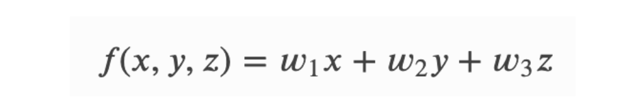
Loss Function: To minimize MSE (or L2 Loss) we use Gradient Descent to calculate the gradient of our cost function:
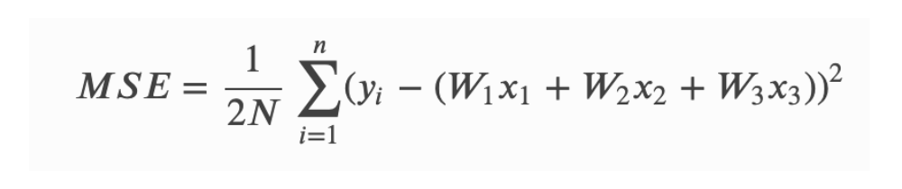
Logistic Regression
Unlike linear regression which outputs continuous number values, logistic regression transforms its output using the logistic sigmoid function to return a probability value which can then be mapped to two or more discrete classes.

Loss Function: Cross-Entropy
Same process as Linear Regression, except we replace the sigmoid function with the softmax function.
Why don’t we use MSE for classification problems?
Our prediction function is nonlinear (due to sigmoid transform).
Squaring this prediction as we do in MSE results in a non-convex function with many local minimums.
If our cost function has many local minimums, gradient descent may not find the optimal global minimum.
K-Nearest Neighbor
An iterative clustering algorithm that groups samples which consist of similar characteristics and that are more related to each other than in other groups.
Each group in the data is distributed around a central point called the “centroid†which is the average of the cluster.
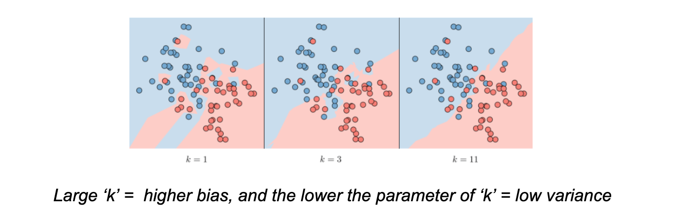
Steps:
Specify the number of clusters
kRandomly pick k centroids from the data points as initial cluster centers
Assign each sample to the nearest centroid (i.e. Euclidean distance)
Move the centroids to the center of the samples that were assigned to it
Repeat the third and fourth steps until the cluster assignment converges
Support Vector Machines
The goal of support vector machines is to find the line that maximizes the minimum distance to the line.
The decision boundary is defined as:
w^Tx - b
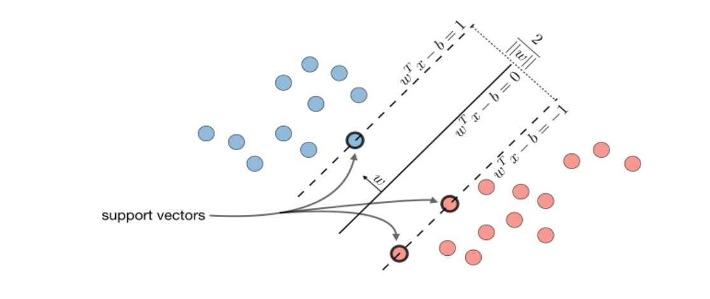
Kernel Trick: -
Non-linear separable -> kernel mapping -> decision boundary in original space
The “kernel trick†is used to compute the cost function using the kernel because we actually don’t need to know the explicit mapping ϕ, which is often very
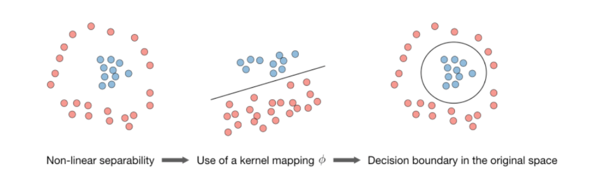
Naive Bayes
Naive Bayes is a probabilistic algorithm that is based on Bayes Theorem.
Bayes’ Theorem basically describes the probability of a feature, based on prior knowledge of conditions that might be related to that feature.
For instance, the conditional probability of B given A.
Our assumption is the probability that the tag of a sentence is Sports given that the sentence is “A very close game”
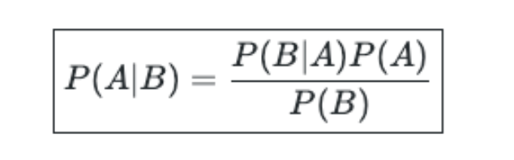
Example:
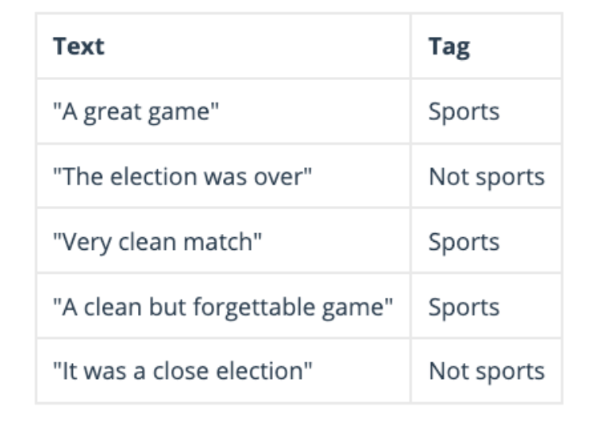
Classification: Building a classifier that says whether a text is about sports or not
Since Naive Bayes is a probabilistic classifier, we want to calculate the probability that the sentence “A very close game†is Sports and the probability that it’s not.
Then, we take the largest one. Written mathematically, what we want is P (Sports | a very close game) — the probability that the tag of a sentence is Sports given that the sentence is “A very close game”.
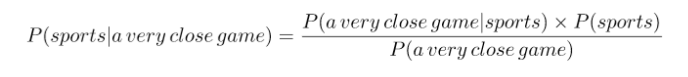
Since for our classifier we’re just trying to find out which tag has a bigger probability, we can discard the divisor —which is the same for both tags— and just compare.

This is better, since we could actually calculate these probabilities!
Just count how many times the sentence “A very close game†appears in the Sports tag, divide it by the total, and obtain P.
Problem:
“A very close game†doesn’t appear in our training data, so this probability is zero. Unless every sentence that we want to classify appears in our training data, the model won’t be very useful.
So here comes the Naive part: we assume that every word in a sentence is independent of the other ones. This means that we’re no longer looking at entire sentences, but rather at individual words.
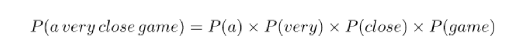
This assumption is very strong but super useful. It’s what makes this model work well with little data or data that may be mislabeled. The next step is just applying this to what we had be Results:
In our case, the possible words are [‘a’, ‘great’, ‘very’, ‘over’, ‘it’, ‘but’, ‘game’, ‘election’, ‘clean’, ‘close’, ‘the’, ‘was’, ‘forgettable’, ‘match’].
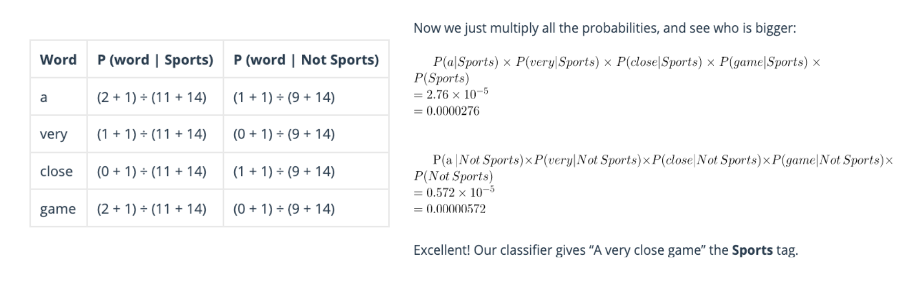
Decision Tree
A decision tree algorithm breaks down our data by making decisions based on asking a series of questions.
First, the decision tree algorithm is a top-down approach; we start at the tree root and split the data on the feature that results in the largest information gain.
It is an iterative process and we can then repeat the splitting criteria at each child node until the leaves are pure.
To determine how the features are split, we can use the concept of
entropy, which measures the uncertaintyThe lower the entropy, the more predictable the class is and for higher entropy values, it becomes more unpredictable.
Next we compute the difference between the entropies before (i.e. parent node) and after the split (i.e. sub-nodes) yields the information gain.
Finally, the objective function is to maximize the information gain at each split, thus the attribute with the highest change in entropy is used as the splitting criteria
Problems with Decision Trees:
Overfitting:
As the decision tree grows and becomes more complex the issue of overfitting arises. Meaning, the model has virtually memorized the training data but will not be expected to perform well with out-of-sample data.
Underfitting:
If the tree is too simple then this could result in underfitting as the learning value is restricted to one level of the decision tree and does not allow the training set to learn the data adequately; a lower complexity decision tree results in high bias.
Methods to address problem:
We want to prune the tree by setting a limit for the maximum depth of the tree.
One way is that we can observe the error vs max_depth plots and also implement
Gridsearchto identify the optimal depth.
Random Forest
Is an ensemble based algorithm that’s built on the idea of Decision Trees.
How it Works:
Random Forest works by training an ensemble of decision trees where each tree is constructed from a different sample of the original training data.
Bagging: where we sample the data with replacement.
Random Forest uses this sampling technique to reduce the variance in model predictions, by creating many of these trees, in effect a “forest”, and then averaging them.
The variance of the final model can be greatly reduced compared to a single tree.
Feature Splitting criteria: choose a random set of features for each split and then compute the entropy and information gain to determine which variable to split on. (see decision tree for more)
Strength:
Works well with missing values and outliers.
Easy to tune for - minimal hyper parameters.
Weakness:
Doesn’t offer the same level of interpretability as decision trees.
Bagging vs Boosting
Bagging
Sampling with replacement (e.g. some observations may be repeated)
Is a way to decrease the variance of your prediction by generating additional data for training from your original dataset using combinations with repetitions to produce multisets of the same cardinality/size as your original data.
By increasing the size of your training set you can’t improve the model predictive force, but just decrease the variance, narrowly tuning the prediction to expected outcome.
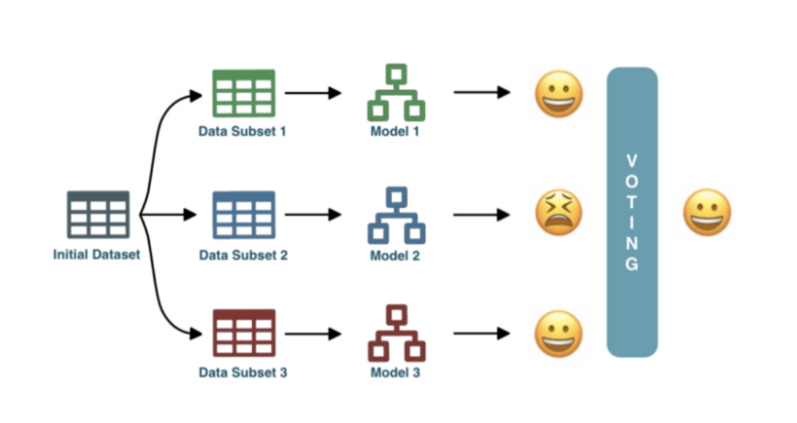
Boosting
Boosting involves the creation and addition of decision trees sequentially, each attempting to correct the mistakes of the learners that came before it.
Instead of training models separately, boosting trains models sequentially, each new model being trained to correct the errors of the previous ones.
At each iteration (round), the outcomes predicted correctly are given a lower weight, and the ones wrongly predicted a higher weight.
It then uses a weighted average to produce a final outcome.
Unlike bagging, the subset creation is not random and depends upon the performance of the previous models: every new subset contains the elements that were (likely to be) misclassified by previous models.
Generally, boosting algorithms are configured with weak learners, decision trees with few layers, sometimes as simple as just a root node.
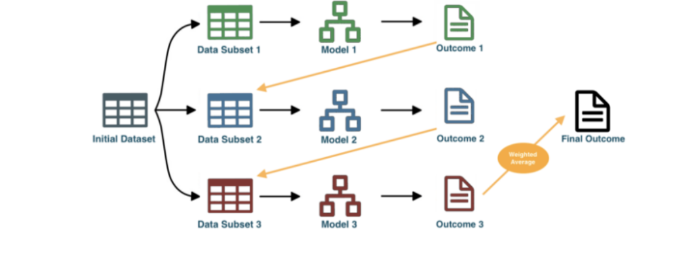
Boosting Rounds
The general reason is that on most problems, adding more trees beyond a limit does not improve the performance of the model.
The reason is in the way that the boosted tree model is constructed, sequentially where each new tree attempts to model and correct for the errors made by the sequence of previous trees. Quickly, the model reaches a point of diminishing returns.
ADA Boost
High weights are put on errors to improve at the next boosting step.
XGBoost
Tree based model that uses the concept of boosting.
With boosting, we construct a series of trees that attempt to correct the mistakes of the model before it in the sequence.
The first model is built on training data, the second model improves the first model, the third model improves the second, and so on.
XGboost also uses “Gradient Boosting†– which is an approach where new models are created that predict the residuals of prior models and then added together to make the final prediction so that the loss function is minimized using gradient descent.
Loss function: difference between predicted and actual value
XGBoost API
DMatrix: an internal data structure that is used by XGBoost, which is optimized for both memory efficiency and training speed.
Feature Importance:
Three ways importance is measured:
Weight: The number of times a feature is used to split the data across all trees.
Cover: The number of times a feature is used to split the data across all trees weighted by the number of training data points that go through those splits.
Gain: The average training loss reduction gained when using a feature for splitting.
Feature importance orderings are very different for each of the three options provided by XGBoost
Hyperparameters
Learning Rate: Step size shrinkage used in updates to prevent overfitting. After each boosting step, we can directly get the weights of new features, and eta shrinks the feature weights to make the boosting process more conservative.
Lambda: L2 regularization term on weights. Increasing this value will make the model more conservative.
Alpha: L1 regularization term on weights. Increasing this value will make the model more conservative.
Gamma: Minimum loss reduction required to make a further partition on a leaf node of the tree. The larger gamma is, the more conservative the algorithm will be.
Max_depth: Maximum depth of a tree. Increasing this value will make the model more complex and more likely to overfit.
0 is only accepted in lossguided growing policy when tree_method is set as hist and it indicates no limit on depth.
Beware that XGBoost aggressively consumes memory when training a deep tree.
Subsample: Subsample ratio of the training instances.
Setting it to 0.5 means that XGBoost would randomly sample half of the training data prior to growing trees. and this will prevent overfitting.
Subsampling will occur once in every boosting iteration.
Objective Functions
multi:softmax:
Set XGBoost to do multiclass classification using the softmax objective.
You also need to set num_class(number of classes)
reg:squarederror: Regression with squared loss.
reg:squaredlogerror: Regression with squared log loss
1/2[𝑙𝑜𝑔(𝑝𝑟𝑒𝑑+1)−𝑙𝑜𝑔(𝑙𝑎𝑏𝑒𝑙+1)]^2
All input labels are required to be greater than -1
reg:logistic: Logistic regression
binary:logistic: Logistic regression for binary classification, output probability
Count:poisson: Poisson regression for count data, output mean of poisson distribution
Evaluation Metrics XGB
rmse: root mean square error
rmsle: root mean square log error:
reg:squaredlogerror
metric reduces errors generated by outliers in the dataset.
mae: mean absolute error
mape: mean absolute percentage error
logloss: negative log-likelihood
error: Binary classification error rate.
It is calculated as #(wrong cases)/#(all cases).
For the predictions, the evaluation will regard the instances with prediction values larger than 0. 5 as positive instances, and the others as negative instances.
merror: Multiclass classification error rate. It is calculated as #(wrong cases)/#(all cases).
mlogloss: Multiclass logloss.
auc: Area under the curve
map: Mean Average Precision
LightGBM
An open-source gradient boosting library developed by Microsoft LightGBM brings significant improvements to vanilla GBT and can be used to train models on tabular data with incredible speed and accuracy.
Gradient-based One-Sided Sampling
Exclusive Feature Bundling
XGboost Vs LightGBM
The main difference between these frameworks is the way they are growing.
XGBoost:
level-wise: an approach where the trees grows horizontal
level-wise splits based on the contribution to loss of particular branch
LightGBM
leaf-wise an approach where the trees grows vertically.
Leaf-wise splits nodes based on the contribution to global loss whereas.
leaf-wise is mostly faster than the level-wise (e.g 10x faster than XGboost)
Survival Analysis
Survival analysis models time to an event of interest.
It originates from clinical research and is a special kind of regression and differs from the conventional regression task as follows:
The label is always positive, since you cannot wait a negative amount of time until the event occurs.
The label may not be fully known, or censored, because “it takes time to measure time.”
Censoring
Some experimenters could not get a complete measurement for that label. We consider this as “partially observed”
Example: if we look at healthcare data and you have a patient who survived the first 30 days and walked out of the clinic on the 31st day, so his death was not directly observed.
Another possibility: The experiment was cut short (since you cannot run it forever) before his death could be observed.
There are four kinds of censoring:
Uncensored: the label is not censored and given as a single number.
Right-censored: the label is of form [a,+∞), where a is the lower bound.
Left-censored: the label is of form [0,b], where b is the upper bound.
Interval-censored: the label is of form [a,b], where a and b are the lower and upper bounds, respectively.
Prepare Training Data:
Survival times are subject to right-censoring, therefore, we need to consider an individual’s status in addition to survival time.
To structure our training data, we need two fields. The first field indicating whether the actual survival time was observed or if was censored, and the second field denoting the observed survival time, which corresponds to the time of death.
Hazard Function
Along with the survival function, we are also interested in the rate at which event is taking place , out of the surviving population at any given time t.
In medical terms, we can define it as “out of the people who survived at time t, what is the rate of dying of those people”.
Kaplan–Meier
Since we don’t have the true survival curve of the population, thus we will estimate the survival curve from the data.
KM is a non-parametric statistic used to estimate the survival function from lifetime data. The survival curve is defined as the probability of surviving in a given length of time.
If we choose not to include the censored data, then it is highly likely that our estimates would be highly biased and under-estimated.
The inclusion of censored data to calculate the estimates, makes the Survival Analysis very powerful.
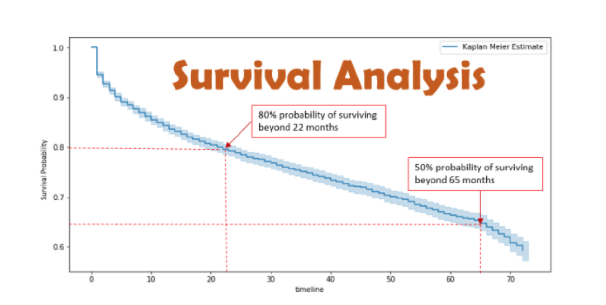
Accelerated Failure Time
The first step is to express the labels in the form of a range, so that every data point has two numbers associated with it, namely the lower and upper bounds for the label. https://xgboost.readthedocs.io/en/latest/tutorials/aft_survival_analysis.html
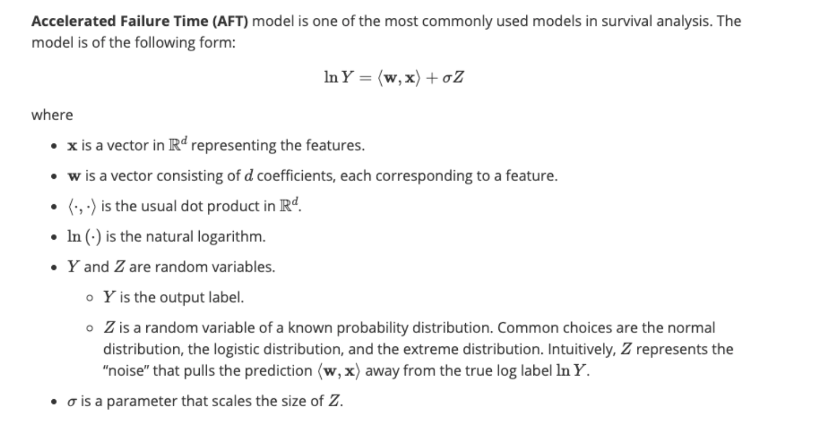
XGBoost Survival Embeddings
Apply Kaplan-Meier on nearest neighbors to generate SA curves for each nearest neighbor segmentation.